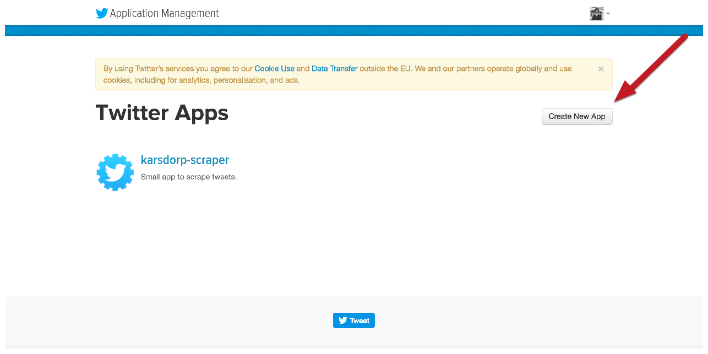
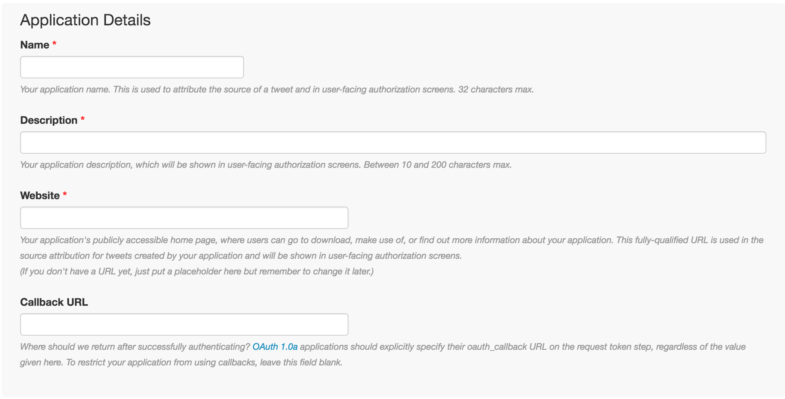

Build an interactive thing in Javascript, that responds to a user input.
Obviously I will assess the two options differently, i.e.
One thing to consider: the ethics of web scraping: see this recent Ninth Circuit ruling that violating a website's term of service is not a crime
good practice: set headers in your web requests identifying yourself
import requests
headers = {'user-agent' : 'Mozilla/5.0 (Macintosh; Intel Mac OS X 10_9_5);
Basile Simon/ London/ basile.simon@thetimes.co.uk'}
html = requests.get(url, headers=headers)
using an API is using an authorised service
even the Guardian has a piece about "what's an API"
The exception are sites built on open source code, which is sort of like a worldwide hippy commune of developers who share their notes. The idea is that they can make better products and software if lots of people collaborate on a project.
good API example: postcodes.io
that's a common way to keep control of who's allowed to use your service. this way, they can shut your app down if you abuse your privileges


some people scrape the internet for published credentials. they could take over your account, post whatever they want in your name, including sending DMs. you've been warned.
in our case: that's tweepy, a wrapper library around the twitter API built in python.
pip3 install tweepy
pip3 install pandas numpy matplotlib seaborn